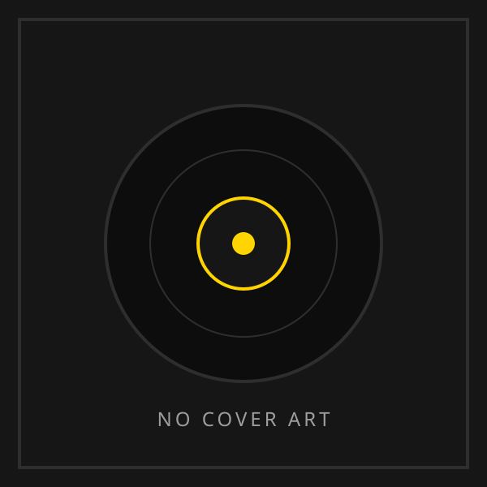

← 中國歌手目錄
首頁
GAI
川渝方言說唱與江湖風代表人物，以極具穿透力的唱腔融合中國傳統元素與硬派說唱。
國家
中國
出身
中國四川省內江市威遠縣（活躍於重慶）
出道年份
2015
風格
江湖說唱、方言饒舌、中國風嘻哈
專輯收藏 / DISCOGRAPHY

光宗耀祖
2018
光宗耀祖
我愛王斯然
紅旗車
包間
萬里長城
烻
2020
烈火戰馬
極樂
蒙著眼睛走
蘭花草
別留
杜康
2022
Intro 歸巢
威遠故事
Richard Mille Life (feat. 葉潤澤)
江湖中人
Skit 踏雲
山嵐
沒敗
杜康
傳奇
Not Friendly
藍色極光
亢龍有悔
Outro 如龍
合作過的歌手 / COLLABORATIONS
Bridge — 〈老大（Remix）〉、〈重慶魂〉
MC HotDog 熱狗
— 〈無雙〉